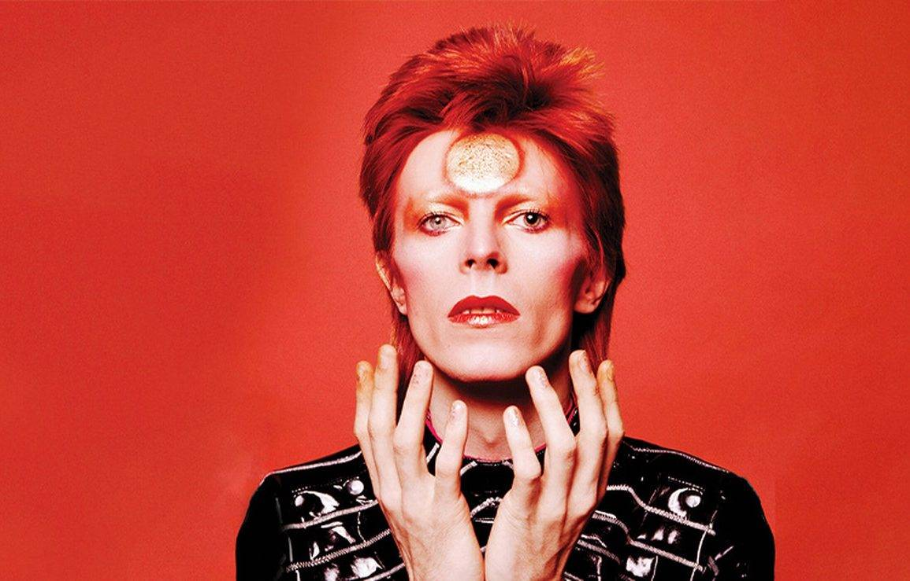

David Bowie: um verdadeiro Rockstar
David Bowie foi um dos artistas mais criativos e influentes da música mundial. Conhecido por sua capacidade de se reinventar, ele marcou diferentes gerações com sua voz, seu estilo visual e sua mistura de rock, pop, arte, teatro e ficção científica. Ao longo de sua carreira, Bowie criou personagens icônicos, como Ziggy Stardust, e transformou cada fase de sua vida artística em uma nova experiência estética e musical.
Mais do que um cantor, David Bowie foi um símbolo de liberdade criativa. Suas músicas exploravam temas como identidade, mudança, fama, solidão e futuro. Com uma presença marcante e visual ousado, ele desafiou padrões e mostrou que a arte pode ser uma forma de transformação. Até hoje, sua obra continua inspirando músicos, artistas, designers e fãs ao redor do mundo
Da infância ao estrelato
David Bowie nasceu em 8 de janeiro de 1947, em Londres, com o nome de David Robert Jones. Desde criança, demonstrava curiosidade por música, arte e diferentes formas de expressão. Durante sua juventude, cresceu em um ambiente marcado por mudanças culturais e sociais, especialmente na Inglaterra do pós-guerra. Ainda adolescente, começou a se interessar por instrumentos musicais, principalmente o saxofone, e passou a buscar sua própria identidade artística.
Antes de alcançar a fama, Bowie enfrentou um caminho de tentativas, mudanças e descobertas. Participou de bandas, experimentou estilos musicais diferentes e procurou uma forma de se destacar em meio a tantos artistas da época. Foi nesse período que decidiu abandonar o nome David Jones e adotar o nome artístico David Bowie, criando uma identidade mais marcante e única.
Na vida adulta, Bowie começou a ganhar reconhecimento com a música “Space Oddity”, lançada em 1969. A canção chamou atenção por sua atmosfera espacial e por apresentar um personagem solitário, Major Tom, que se tornaria uma figura importante em sua obra. A partir daí, Bowie passou a construir uma carreira marcada pela criatividade, pela mudança constante e pela mistura entre música, teatro, moda e performance.
O grande estrelato veio nos anos 1970, quando Bowie criou o personagem Ziggy Stardust, um astro do rock vindo de outro mundo. Com visual ousado, roupas extravagantes, maquiagem marcante e músicas inovadoras, ele conquistou o público e se tornou um símbolo de liberdade artística. Bowie não era apenas um cantor: ele era um artista completo, capaz de transformar sua imagem, seu som e sua mensagem a cada nova fase.
Ao longo de sua carreira, David Bowie se tornou uma das figuras mais importantes da cultura pop. Sua trajetória, desde a infância até o estrelato, mostra a história de alguém que nunca teve medo de mudar, experimentar e desafiar padrões. Por isso, Bowie continua sendo lembrado como um verdadeiro ícone da música, da moda e da arte.

David Bowie construiu uma carreira marcada por grandes sucessos que atravessaram gerações. Entre suas músicas mais conhecidas estão Space Oddity, Starman, Heroes, Life on Mars? e The who sold the world. Cada uma delas representa uma fase importante de sua trajetória artística, mostrando sua criatividade, sua capacidade de se reinventar e sua influência na música mundial.
Nos últimos anos de sua vida, David Bowie continuou mostrando sua criatividade e sua capacidade de se reinventar. Mesmo após décadas de carreira, ele ainda buscava novas formas de expressão, explorando sons, imagens e ideias diferentes. Seus trabalhos finais mostraram um artista maduro, reflexivo e ainda muito inovador.
Nesse período, Bowie passou a criar músicas com um tom mais profundo e misterioso, falando sobre o tempo, a vida, a identidade e a despedida. Sua obra final foi recebida como uma espécie de último gesto artístico, mostrando que ele permaneceu original até o fim.
David Bowie faleceu em 2016, deixando fãs emocionados no mundo todo. Sua morte marcou o fim de uma trajetória brilhante, mas sua influência continuou viva. Seu legado permanece presente na música, na moda, na arte e na cultura, inspirando artistas e admiradores de várias gerações.